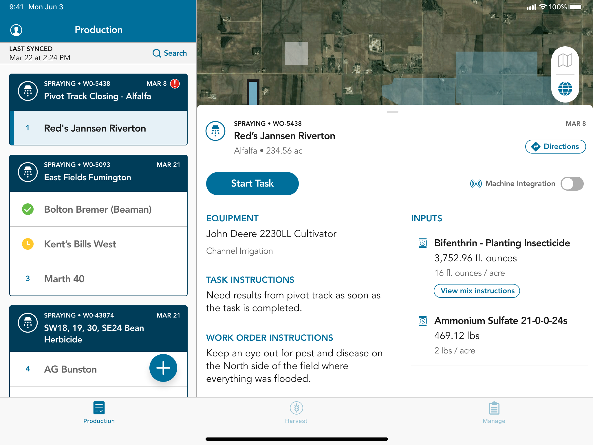
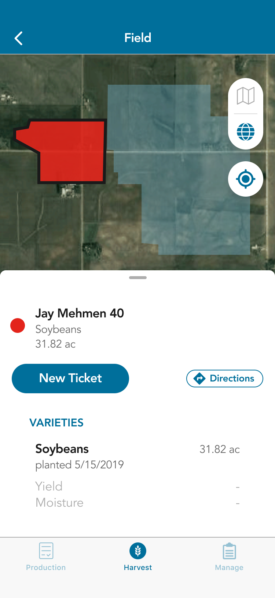
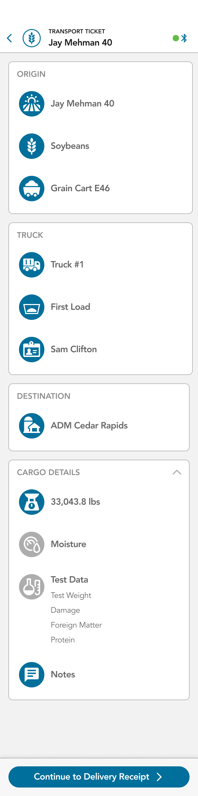
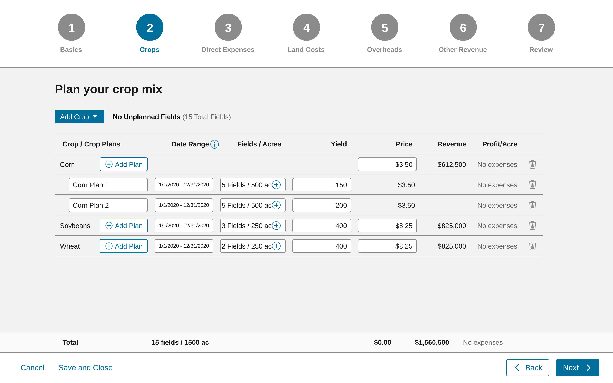
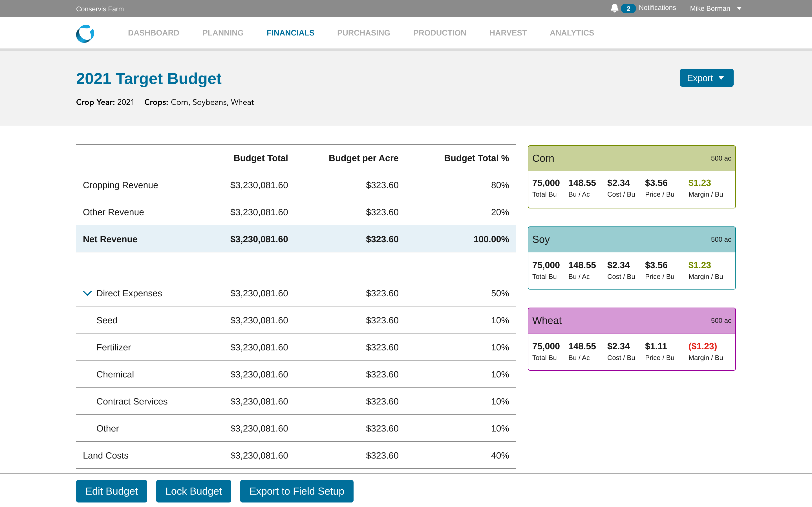

Conservis
Field work and financial planning, connected acre by acre.
- Role
- Product design lead
- Studio and dates
- Foundry · 2016–21
- Scope
- Dashboard · Mobile · Reports
I led design as the farm-management suite expanded. We kept fields at the center of the dashboard, brought task recording into the field, and turned the same operation’s data into budgets and reports a grower could take to a lender.





The field record leads into a ticket. The phone carries the same operational detail without requiring a trip back to the desk.


